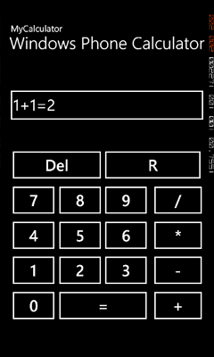

What I build is just a simple calculator that will show beginners how much easy it is to develop applications using the Windows Phone SDK. Through this sample, they will see some most useful algorithmic operations. In addition they will understand how to program buttons and use its properties, specially the object sender which is the first parameter of any click event. In fact, the sender object encapsulate all the control's button properties. Just a casting operation to a Button control will give you access to these properties.
Are there special requirements or instructions for building the sample?
As it is a Windows Phone Application, you will need to have Visual Studio for Windows Phone Express installed or Visual Studio 2010, which you can download them from
http://code.msdn.microsoft.com/Windows-Phone-Calculator-6f44a9f2/https://dev.windowsphone.com/en-us/downloadsdk and http://www.microsoft.com/visualstudio/en-us/try.
When installed, all you need is to open the .sln file with visual studio and press F5 to run.
Description
An overview:

private void Number_Click(object sender, RoutedEventArgs e)
{
Button b = (Button)sender;
tb.Text += b.Content.ToString();
}
private void Result_click(object sender, RoutedEventArgs e)
{
try
{
result();
}
catch (Exception exc)
{
tb.Text = "Error!";
}
}
private void result()
{
String op;
int iOp = 0;
if (tb.Text.Contains("+"))
{
iOp = tb.Text.IndexOf("+");
}
else if (tb.Text.Contains("-"))
{
iOp = tb.Text.IndexOf("-");
}
else if (tb.Text.Contains("*"))
{
iOp = tb.Text.IndexOf("*");
}
else if (tb.Text.Contains("/"))
{
iOp = tb.Text.IndexOf("/");
}
else
{
//error
}
op = tb.Text.Substring(iOp, 1);
double op1 = Convert.ToDouble(tb.Text.Substring(0, iOp));
double op2 = Convert.ToDouble(tb.Text.Substring(iOp + 1, tb.Text.Length - iOp - 1));
if (op == "+")
{
tb.Text += "=" + (op1 + op2);
}
else if (op == "-")
{
tb.Text += "=" + (op1 - op2);
}
else if (op == "*")
{
tb.Text += "=" + (op1 * op2);
}
else
{
tb.Text += "=" + (op1 / op2);
}
}
private void Del_Click(object sender, RoutedEventArgs e)
{
tb.Text = "";
}
private void R_Click(object sender, RoutedEventArgs e)
{
if (tb.Text.Length > 0)
{
tb.Text = tb.Text.Substring(0, tb.Text.Length - 1);
}
}
private void Number_Click(object sender, RoutedEventArgs e) { Button b = (Button)sender; tb.Text += b.Content.ToString(); } private void Result_click(object sender, RoutedEventArgs e) { try { result(); } catch (Exception exc) { tb.Text = "Error!"; } } private void result() { String op; int iOp = 0; if (tb.Text.Contains("+")) { iOp = tb.Text.IndexOf("+"); } else if (tb.Text.Contains("-")) { iOp = tb.Text.IndexOf("-"); } else if (tb.Text.Contains("*")) { iOp = tb.Text.IndexOf("*"); } else if (tb.Text.Contains("/")) { iOp = tb.Text.IndexOf("/"); } else { //error } op = tb.Text.Substring(iOp, 1); double op1 = Convert.ToDouble(tb.Text.Substring(0, iOp)); double op2 = Convert.ToDouble(tb.Text.Substring(iOp + 1, tb.Text.Length - iOp - 1)); if (op == "+") { tb.Text += "=" + (op1 + op2); } else if (op == "-") { tb.Text += "=" + (op1 - op2); } else if (op == "*") { tb.Text += "=" + (op1 * op2); } else { tb.Text += "=" + (op1 / op2); } } private void Del_Click(object sender, RoutedEventArgs e) { tb.Text = ""; } private void R_Click(object sender, RoutedEventArgs e) { if (tb.Text.Length > 0) { tb.Text = tb.Text.Substring(0, tb.Text.Length - 1); } }
Something is not clear? Please let me know.
Need more samples? Just take a look at this link http://code.msdn.microsoft.com/site/search?f%5B0%5D.Type=User&f%5B0%5D.Value=Houssem%20Dellai .